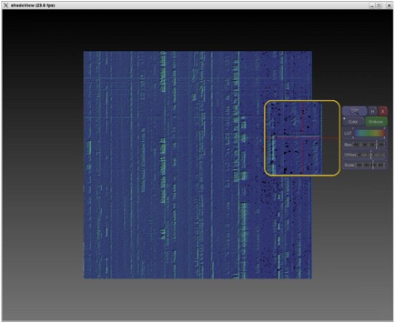

Pixels and Polygons
OpenGL Shading Framework

I developed an object oriented framework to make working with OpenGL 2.1 easier.
The C++ class library initializes OpenGL extension entry points, provides file loading,
compiling, linking and error checking of vertex and fragment programs. Run time methods
are provided to enable, disable and pass parameters to programs. The framework’s base
classes can be sub classed to create more complex shaders as shown in the example below.
Win32 Port
I ported a suite of multi-threaded, client-server applications used in the visualization of
radio frequency signals for the Espy Corporation from Linux to Microsoft Windows. The port,
which included hundreds of C++ classes, 15 libraries and 6 applications, consisted of 3D
rendering, audio playback, networking and system level programming.
Parallel Ray Tracer
I ported a real-time SMP ray tracing program from IRIX/GL/SPROC to Linux/OpenGL/POSIX threads
to demonstrate how scalable computing can be synchronized with double buffered OpenGL rendering.
Arrays of semaphores provide a barrier to synchronize worker threads with OpenGL buffer swaps.
GPU-based Scalable Volumetric Shading
For SGI’s Prism system, I implemented a GPU fragment program, written in SIMD assembler, that
performs high quality lighting on volumetric data. The OpenGL Volumizer API provided a multiple
GPU scalable framework based on 2D screen decomposition. As each slice of the volume is rendered,
callbacks are used to generate texture coordinates which are passed to the fragment shader. Using
the texture coordinates, the shader computes the gradients on the fly using a forward difference method.
Once the gradients are obtained, a full Phong lighting model is computed for each fragment. The
user is able to control the light source and object position in real time.
3D MRI Reconstruction
This sample application was written to complement an introductory seminar on medical imaging I
developed based on SGI’s OpenGL Volumizer API. It features user controllable CT transfer functions
to easily locate bone and skin boundaries, clipping, volumetric lighting, trackball control and
asymmetric stereo viewing to support immersive environments.
LS-DYNA Translator
This project involved writing a data translator from scratch so advanced rendering tools such as
SGI’s OpenGL Optimizer could be used to visualize the results. The translator was written in C++
using the Open Inventor toolkit.
Medical Data Visualizer
This project was done to complete an upper level course in Computer Graphics at the Rochester
Institute of Technology. The application was written using the Visualization Toolkit (VTK) and
runs under IRIX, LINUX and Windows. It includes features such as volumetric ray tracing,
iso-surfacing, slicing, segmentation and LOD management and includes a user manual.
Video Chalkboard
Video Chalkboard is an application that allows the user to use the mouse as a pen to write over
incoming live video. Each frame of video is captured using SGI’s video libraries and is written
to the screen as pixels with OpenGL. The pen strokes are accumulated in a linked list then
written on top of the video pixels as GL_LINES or pixels depending on which command line option
is selected. Optionally, the blended output may be sent to video out.
Kodak DCS digital camera device driver and image viewer
When Kodak released the DCS 10000 camera, only drivers existed for the Windows operating system.
I developed a driver and imaging application under the IRIX operating system enabling SGI’s
customers to use the camera in collaborative medical environments. The driver was written from
scratch using the user level SCSI libraries provided with IRIX. Once, the image was acquired
from the camera, it was scaled, balanced, shifted, interpolated, clipped and color corrected.
A programmer’s guide but no example source code was provided by Kodak.